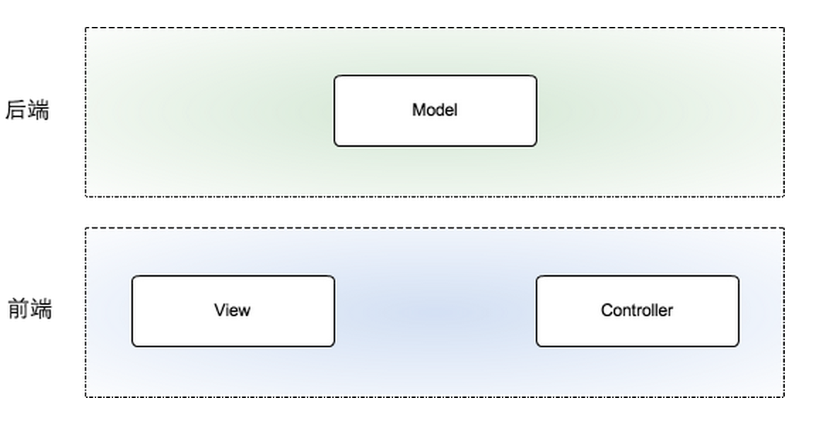

前后端分离
前端：负责View和Controller层。
后端：只负责Model层，业务处理/数据等。

性能问题
分层就涉及每层之间的通讯，肯定会有一定的性能损耗。但是合理的分层能让职责清晰、也方便协作，会大大提高开发效率。分层带来的损失，一定能在其他方面的收益弥补回来。
另外，一旦决定分层，我们可以通过优化通讯方式、通讯协议，尽可能把损耗降到最低。
一、内容部分
- 尽量减少 HTTP 请求次数
- 减少DNS查找次数
- 避免跳转
- 可缓存的 AJAX
- 推迟加载内容
- 预加载
- 减少DOM元素数量
- 根据域名划分页面内容
- 使 iframe 的数量最小
- 不要出现 404 错误
二、服务器端
- 使用内容分发网络
- 为文件头指定Expires或Cache-Control
- Gzip压缩文件内容
- 配置ETag
- 尽早刷新输出缓冲
- 使用GET来完成AJAX请求
三、JavaScript 和 CSS
- 把样式表置于顶部
- 避免使用CSS表达式(Expression)
- 使用外部JavaScript和CSS
- 削减JavaScript和CSS
- 用代替@import
- 避免使用滤镜
- 把脚本置于页面底部
- 剔除重复脚本
- 减少 DOM 访问
- 开发智能事件处理程序
四、Cookie,图片及移动应用
- 减小Cookie体积
- 对于页面内容使用无coockie域名
- 优化图像
- 优化 CSS Spirite
- 不要在 HTML 中缩放图像
- favicon.ico 要小而且可缓存
- 保持单个内容小于 25K
- 打包组件成复合文本